Interaction Effects
Goal : In this document, I’ll do my best to walk y’all through the theory and computation required to understand and interpret interaction effects in R.
Part 1 : Interaction Effects (“It Depends” / Life is Complex…)
TLDR : What is an Interaction Effect and Why Should I Care, Professor?
Before I make things confusing, let me try to clearly explain what an interaction effect is, and why we care about it :)
Life is complex - one variable (a DV) can be explained by many other variables (IVs). And not only do each of these IVs uniquely influence the DV (multiple regression), but these IVs can influence each other, and the way that they each influence the DV (multiple regression with an interaction effect).
An interaction effect describes the idea that the effect of an IV on the DV might depend on some other IV. Below are a few conceptual examples :
The effect of studying on grades depends on how much sleep you’ve gotten.
For someone with a lot of sleep, studying is very effective.
For someone with a little sleep, studying is not very effective.
The effect of an SSRI on well-being depends on whether the person is also engaged in cognitive behavioral therapy. For someone in talk-therapy, taking an anti-depressant is more effective than for someone who is not in talk-therapy.
The effect of seeing a bowl full of food on your hunger depends on whether the food is something you enjoy or not.
Scientists looking to understand variables thus look to interaction effects in order to get a better understanding of the phenomenon. And sometimes, it’s only by looking at interaction effects that you can find patterns in the data. For example, for a while there was a mystery about why there was widespread bee colony death - turns out that scientists needed to look for an interaction effect between variables (including climate change) to find potential answers.
Post some examples in our discord thread if you want :) - great if you have an example of an interaction effect to test in your final project (but this is not required!)
RECAP : Main Effects (the independent effect of one IV on the DV)
Main Effects in Bivariate Regression
So far in this class, we have worked with what are called simple “main effects” - the relationship between one variable and another. We first looked at this in a bivariate (two variable) model, with one DV and one IV.
For example, here’s some fake data where I’m looking at two linear models predicting safety - whether people are safer on bikes (or not) and whether people are safer with a helmet (or not).
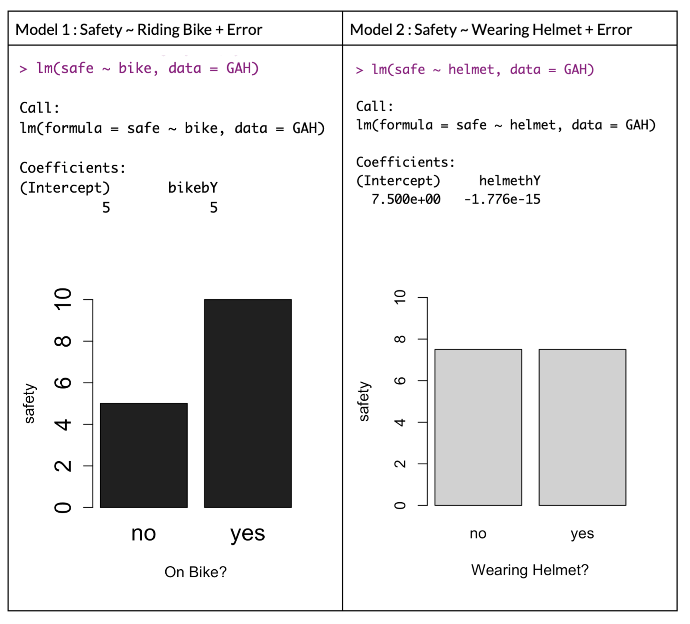
We see that there appears to be a difference - people in these fake data are more safe when on a bike (b = 5) than when not on a bike, and there appears to be no difference in terms of their safety when wearing a helmet or not.
Main Effects in Multiple Regression
In Chapter 10, we saw that one of the benefits of adding complexity to our linear models is that we could “examine the unique effects of variables”; that “we can test whether the effect of one variable (IV1) on another (DV) is unique to that variable, or whether that relationship is also explained by some other variable (IV2).” That is, I could test whether the relationship between bike riding and safety changes if you control for any effects of wearing a helmet (or test for whether the non-effect of wearing a helmet on safety might be changed if you account for any effects of riding a bike on safety.)
To do this, I’d enter both variables into my linear model, and look to see how the slopes changes from their respective bivariate models.
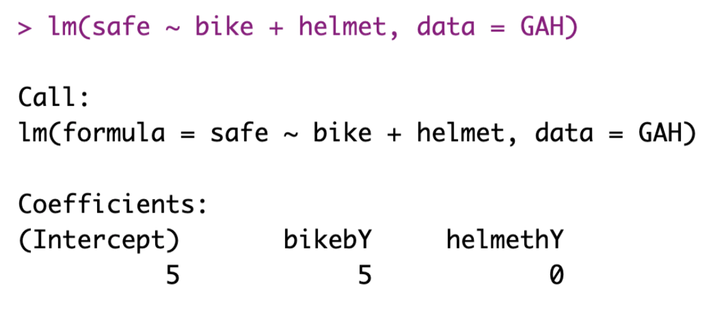
Looking at the fake data, I find the exact same slopes for each independent variable even when controlling for redundant covariation with a multiple regression - folks who ride a bike are more safe (b = 5) and there’s no effect of wearing a helmet on safety (b = 0). I’d say these are independent main effects - since I’m looking at each variable in isolation.
Interaction Effects : When the Effect of One Variable Depends on Another
The Interaction Effect in an Equation
When testing for an interaction effect, we are looking to see whether the two variables work together to make different predictions of the dependent variable. Because we are looking at how one IV interacts with / depends on the effect of an other IV, we need to connect these variables in some way, and we do this by multiplying the two variables together in our linear model :
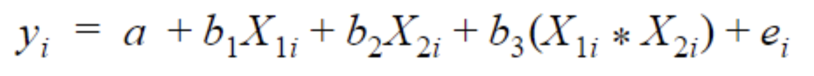
The interaction term is represented in b3 - this is an adjustment (a slope) that we will make to our other slopes. Below, we’ll look at this with our bike riding example.
Example : The Effect of Wearing a Helmet on Safety Depends on Whether You are Riding a Bicycle or Not
I’d examine whether the effect of wearing a helmet might DEPEND on whether or not the person is on a bike. I’d expect that wearing a helmet would be more important for safety if the person is riding a bike than if the person is walking around.
To test this, I would again add both variables to my linear model in a multiple regression. In addition to adding the variables together, I would also add an interaction term - the product (multiplication) of the two variables :
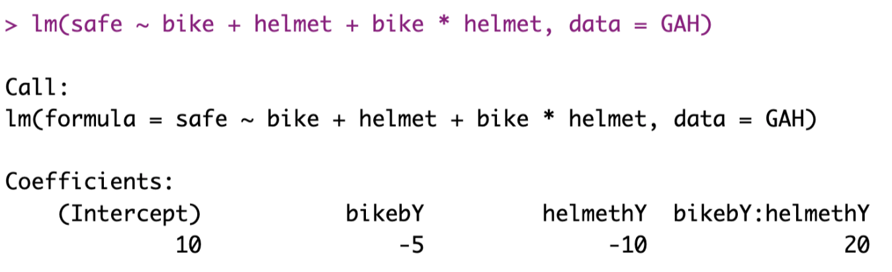
I go over the terms from this model much more in Part 2 of this document. But the result is a linear model that would result in the graph below, which reveals an interaction effect : the effect of wearing a helmet on safety depends on whether you are reiding a bike or not.
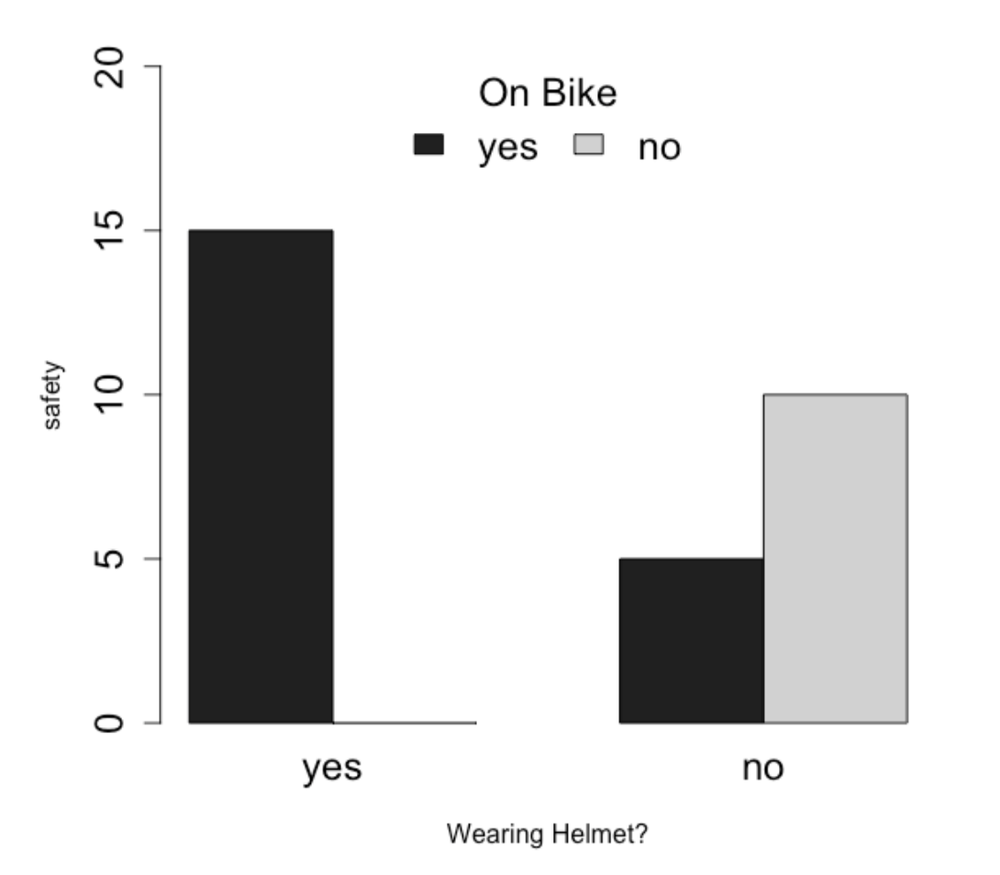
The Effect of Using Implementation Intentions on Task Completion Depends on the Type of Goal
What is an implementation intention? I’m glad you asked!
How to interpret the interaction effect of an implementation intentions? In six minutes.1
1 note : somewhat tragic story, shortly after I started working on this implementation intention, I got an e-mail from someone advertising a paper that was a more clearly written version of the paper that I wrote that got rejected. Would have been more heartbreaking had it a) not been almost a decade since I got rejected (to be honest it was almost a relief to be free of that burden of a project that I had long stopped caring about) and b) the newer paper was really good. can’t find it right now but if anyone is reading this let me know and I’ll try to find a copy of the paper!
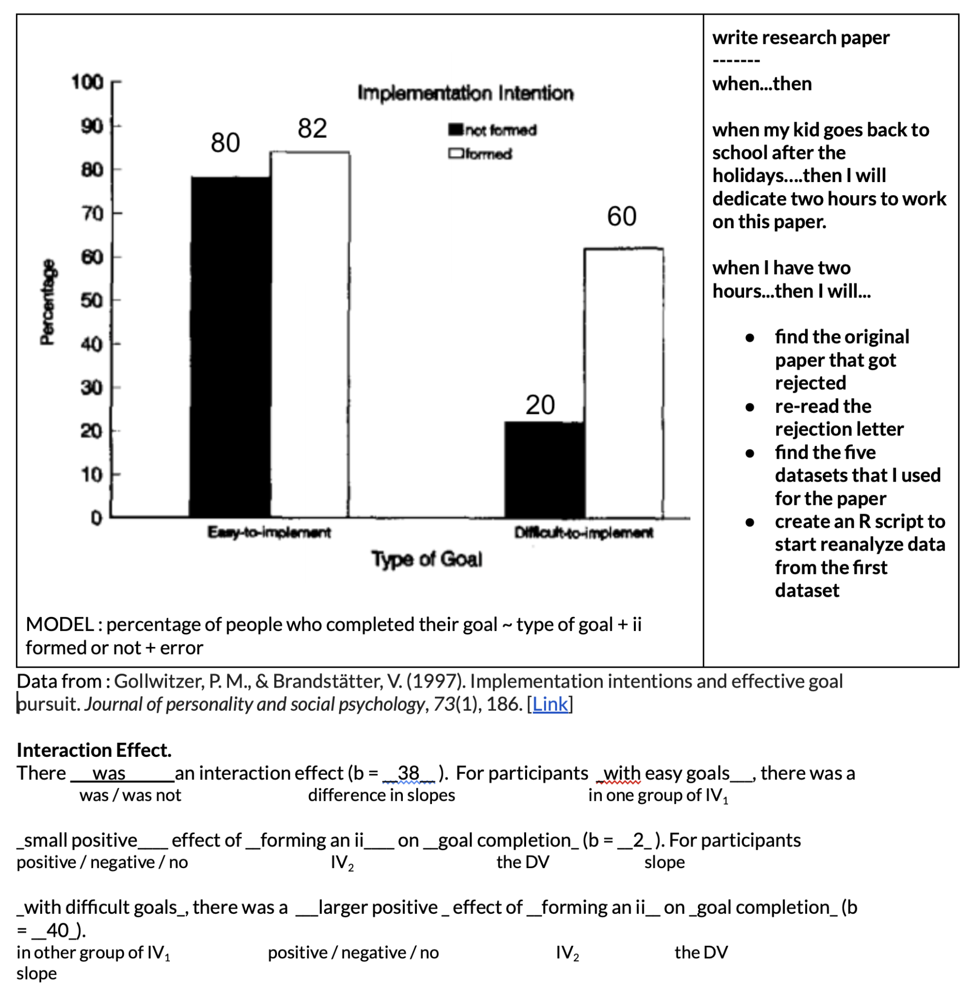
The Effect of Resume Quality on Callback Percentage Depends on the Applicant’s Perceived Race
In the video below, I walk through data from Bertrand & Mullainathan’s (2004) excellent paper demonstrating white privilege with real data.
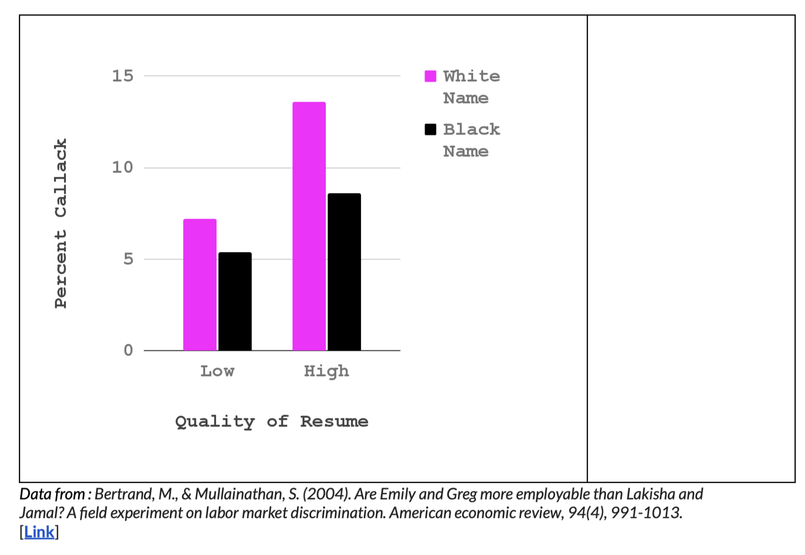
The Effect of Time on Hurt Feelings Depends on Whether You Take a Pain Pill or Not
Still in the mood for another example? Don’t worry about hurting my feelings I’m loaded up on TYLENOL.2
2 Data from : DeWall, C. N., MacDonald, G., Webster, G. D., Masten, C. L., Baumeister, R. F., Powell, C., … & Eisenberger, N. I. (2010). Acetaminophen reduces social pain: Behavioral and neural evidence. Psychological science, 21(7), 931-937. [Link and here’s a good critique of the research]
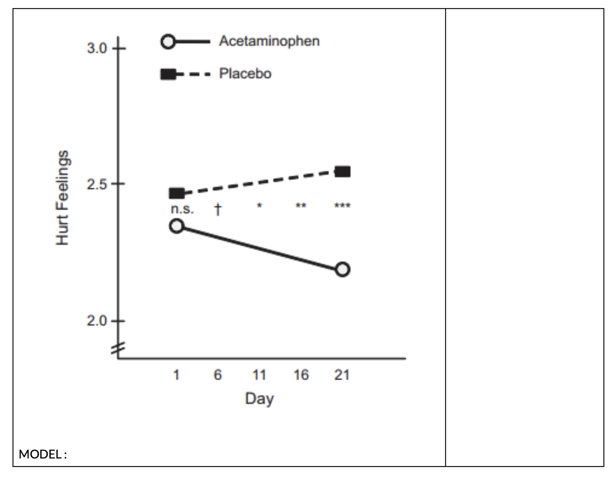
Gosh Professor, I Just Love These Examples, Can We Have Some More?
No, student. I am all done providing examples. But you can generate your own examples.
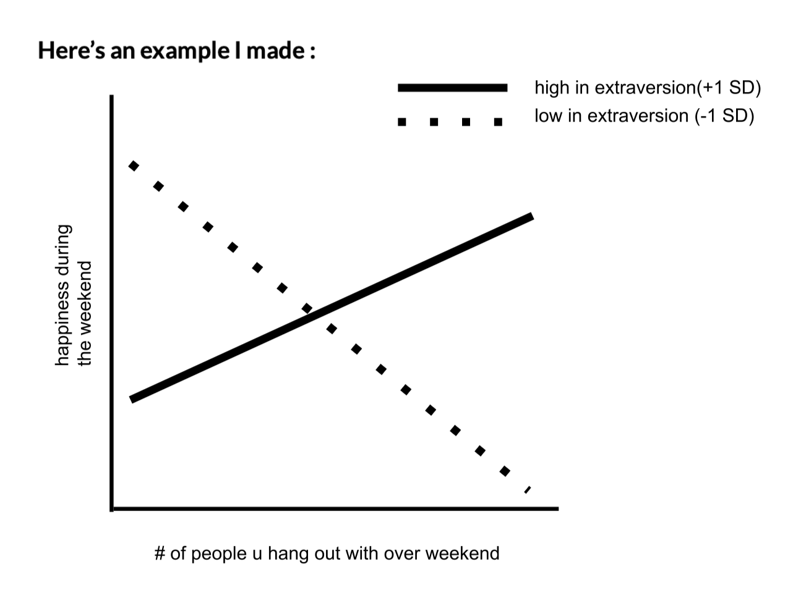
Part 2 : How To Calculate Interaction Effects in R
Interaction Effects (vs. Main Effects)
Main Effects
So far in this class, we have focused on the slopes in regression models, since these terms describe the relationship between two variables (DV ~ IV1); researchers use this relationship to make their predictions about the DV (e.g., if there is a relationship between presence of rain clouds and rain, then I will predict it will rain when I see a rain cloud outside). Another word for the slope is an “effect”, and the type of effect we have been working with so far in this semester is often called a main effect.
Interaction Effects
An interaction effect allows you to test whether the relationship between one independent variable and the dependent variable *depends on* another independent variable. (In other words, whether the main effect is moderated, or changed, by some other variable). Interaction effects are a special form of multiple regression, where you have two (or more) independent variables in your model. Whereas before we added a second (or third) variable to our model, an interaction effect examines the result of the product (or multiplication) of two independent variables.
The Model
The model for an interaction effect should look familiar!
yi = the individual’s actual score that we are trying to predict (the DV). Remember that the i symbol represents an individual; each individual has a specific value for the DV.
a = the intercept (a constant value that is always part of your model), and is the starting place for our predictions. (“The predicted value of y when all X values are zero!”, they said.)
X1 = the individual’s specific value for the first independent variable (X1).
b1 = the slope for X1 = the adjustment we make in our prediction of y, based on the individual’s value of X1.
X2 = the individual’s specific value for the second independent varible (X2)
b2 = the slope for X2 = the adjustment we make in our prediction of y, based on the individual’s value of X2.
b3 = the slope for our interaction term = the change that we make in our predictions of y based on the values of BOTH X1 and X2
ei = the individual’s specific error (residuals) = the distance between the predicted values of y and the individual’s actual score for y.
Consider the graph from our bike riding example.
We can use the output of a model to get the same estimated effects of safety for each group.
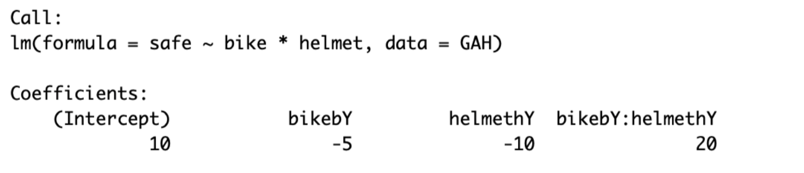
We can plug these estimates into our model :
Y ~ 10 - 5(bikeY) - 10(helmetY) + 20(bikeY * helmetY)
- bikeYes and helmetYes are both dummy coded variables that take the values 0 (NOT on a bike and NOT wearing a helmet) and 1 (on a bike and on a helmet).
Try the calculations on your own. Plug these values into the equation in order to get the four combinations of bike and helmet.
Example : wearing a helmet (helmetY = 1) and not on a bike (bikeY = 0).
Y ~ 10 - 5(bikeY) - 10(helmetY) + 20(bikeY * helmetY)
Y ~ 10 - 5(0) - 10(1) + 20(0*1)
Y ~ 10 - 0 - 10 + 0
Y ~ 0
| Helmet - Yes | Helmet - No | |
| Bike - Yes | 15 | 5 |
| Bike - No | 0 | 10 |
These values should yield the same values you get from the graph - the model just defines changes to predictions of Y depending on information in X1 and X2.
Note : the principle of sampling error still applies to these estimates - you could find the estimate (slope) in your model because there is some real interaction effect (the alternative hypothesis), or because of chance (the null hypothesis). You can use bootstrapping to estimate the variation due to sampling error, and use that distribution to estimate the likelihood of finding a non-zero estimate.
Another Example Using Data in R
Interaction effects are notoriously tricky, so below I will walk you through a few examples of how to model, interpret, and graph interaction effects. For this problem, I’m using the Prestige dataset, from the ‘car’ library. I’m skipping over the bivariate regression models (DV ~ IV1 , DV ~ IV2) and the multiple regression model (DV ~ IV1 + IV2) since we’ve worked with these before. However, you MUST do all these steps first before you do an interaction effect in order to be able to fully interpret the model!
The Model : One Continuous DV, One Continuous IV, and One Categorical IV
First, we define our model, and examine the coefficients of this model. I’ve z-scored all my terms, so everything is in units of standard deviation.
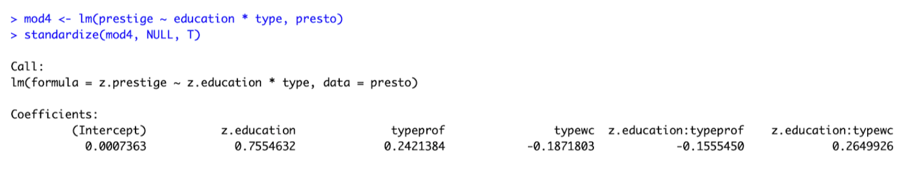
I walk you through this model below :
| Term | Name | Value | Interpretation |
| 1 | Intercept | 0.00 | This is the starting place for our line - the predicted value of prestige when all X values are zero. Since my variables are z-scored, zero means “average”, so again we see that someone with average education and is NOT a white collar or professional worker (a blue collar worker) has an average level of prestige. |
| 2 | z.education | .76 | This is the relationship between education and prestige for blue collar workers - in other words, for people who are NOT white collar or professional workers (blue collar workers). |
| 3 | typeprof | .24 | This is the adjustment we make to our prediction of prestige for someone who IS a professional worker (compared to blue collar workers). In other words, a professional worker has .24 standard deviations more prestige than a blue collar worker, assuming both have similar levels of education. |
| 4 | typewc | -.19 | This is the adjustment we make to our prediction of prestige for someone who IS a white collar worker (compared to blue collar workers), controlling for years of education. In other words, a white collar worker is predicted to have .19 standard deviations less prestige than a blue collar worker, assuming both have similar levels of education. |
| 5 | z.education:typeprof | -.16 | This is the adjustment we make to the slope for education if someone comes from a professional job. In other words, the relationship between education and prestige among professional workers is .16 standard deviations less than among blue collar workers. So the relationship between education and prestige among professional workers would be moderated (changed) : b = .76 - .16 = .50. This difference in the slope is the interaction effect - the relationship between education and prestige depends on the type of job a person has. |
| 6 | z.education:typewc | 1.02 | Again, this is the adjustment we make to the slope for education if someone comes from a white collar job. In other words, the relationship between education and prestige among white collar workers is STRONGER (by .26 standard deviations) THAN the relationship between education and blue collar workers. This means the relationship between education and prestige among professional workers is moderated (changed) : b = .76 + .26 = 1.02. This difference in the slope is another example of the interaction effect - the relationship between education and prestige depends on the type of job a person has. |
TLDR : the interaction effects are terms 5 and 6, which describe how the relationship between education and prestige for blue collar workers is changed (moderated) for individuals who come from professional jobs (change in slope of education = -.16) and white collar jobs (change in slope of education = .26).
The Graphs.
Interaction effects might make more sense if you graph them. Below, I’ve saved my model coefficients as an object cf, and refer to each coefficient by number. So cf[1] = the intercept; cf[5] = z.education:typeprof, etc.
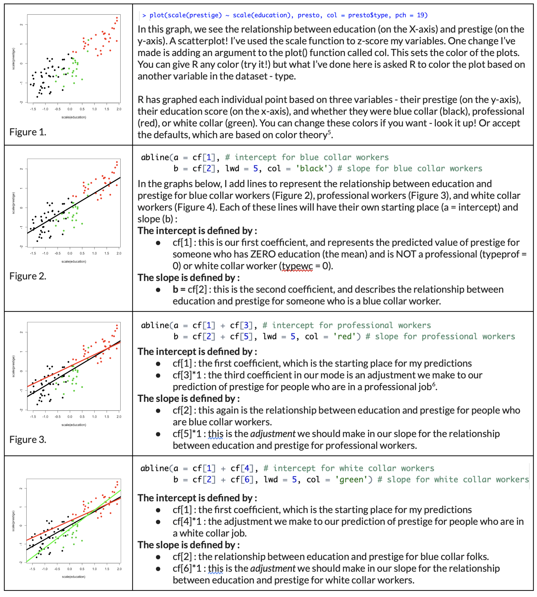
Here’s the final graph, reprinted.
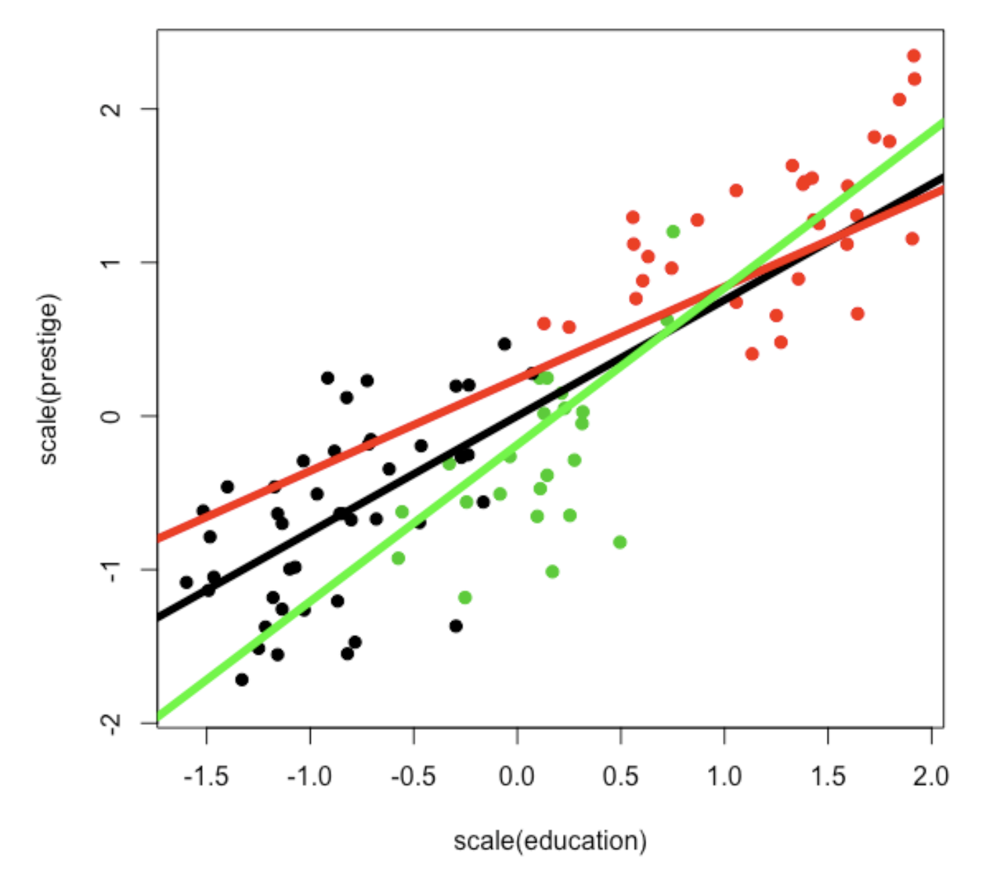
If you look at the graph, you’ll notice that the black line seems to best describe the relationship for the black dots (blue collar workers), the red line seems to describe the relationship for the red dots (professional workers), and the green line best for the green dots (white collar workers. And there are small differences in where the lines start (the main effects of job type) and their slope (the interaction effects of how job type changes the relationship between education and prestige).
To best interpret the main effects, you need to run the multivariate model with NO interaction effect term, as described in the previous lecture.
Statistical Inference
To recap, the model just describes the relationships between our variables for the sample, and researchers are typically interested in using what we’ve learned about the sample to make a prediction about the broader population. We know that our sample will not represent the population (sampling error), but are instead estimates that might vary due to chance. So we have to conduct some inferential statistics to estimate the amount of sampling error in our model.
So, like for bivariate models, we will have to estimate sampling error (using bootstrapping or the summary() function to calculate standard error) to guess at the chance that the interaction effects that change the relationship between education and prestige was found due to chance.
One important thing about interaction effects - because an interaction effect involves both two independent variables working together to make predictions of the DV, you need to make sure that both independent variables are on the same scale, or your standard error estimates will be off. To do this, make sure to z-score your variables, or use the standardize() function [part of the ‘arm’ package] on your model (as I’ve already done - just reminding y’all.
Here’s the output of my summary of a z-scored model. Let’s focus on just one interaction effect : the change in the relationship between education and prestige for professional workers (vs. blue collar workers).
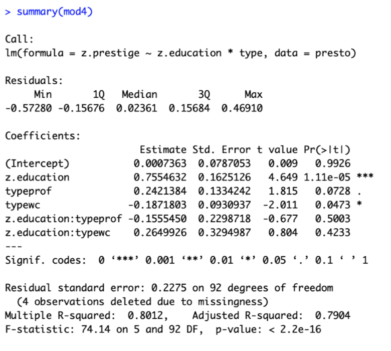
Our estimate is that positive relationship between education and prestige for blue collar workers (β = .76) is adjusted for professional workers (the adjustment is β = -.16, so the slope for people who do are professional workers would be β = .76 - .16 = β = .60). The standard error for the interaction effect (.23) suggests that IF the null hypothesis were “true”, the average variation in interaction effects we might find due to chance would be .23. The t-value (-.68) suggests that the interaction effect we found is only ⅔ of the average interaction effect we would expect to find on average due to sampling error if the null hypothesis were true. The p-value (p = .5) suggests that the probability of finding this interaction effect if the null hypothesis is true is about 50%, which is very likely, and suggests that it’s most likely we would have found this interaction effect due to chance.
Of course, we could be wrong in our determination that this is a non-significant finding - there is a 50% chance that we would not observe this slope (or one larger) due to chance if the null hypothesis were true. But this, along with the fickle nature of interaction effects, I think this interaction effect, and the one for white collar jobs, is likely bogus. And in any case, if I really cared about this effect and wanted to write about this in a paper, I would replicate this effect in other datasets (starting with Berkeley students and then generalizing to other samples) no matter the significance level.
Cool. I think that’s all for now.